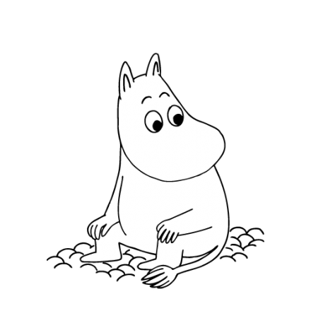
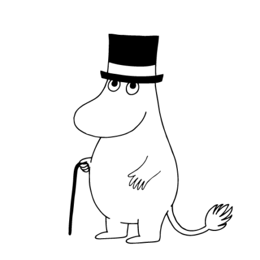
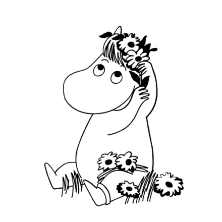
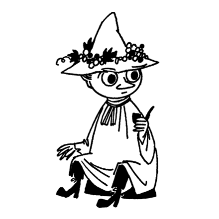
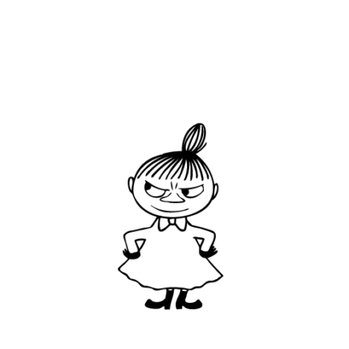
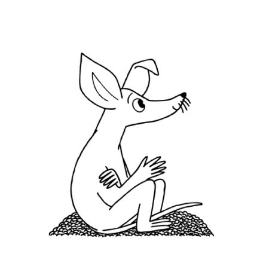

ムーミン公式サイト
キャラクター紹介

- ●ムーミントロール●
- ふさのついたしっぽと、丸くて白い体が特徴のムーミン族の男の子です。好奇心旺盛で、勇気があり、優しくて素直な性格。たまに、考えすぎてしまうことがあり、さみしがりやでナイーブな一面も。

- ●ムーミンパパ●
- ムーミン一家のお父さん。若い頃はムーミントロールと呼ばれていましたが、一人息子のムーミントロールが生まれてからは、ムーミンパパと呼ばれるようになりました。
トレードマークは、黒いシルクハットとステッキ。

- ●ムーミンママ●
- ムーミン一家のお母さん。夫のムーミンパパ、息子のムーミントロールだけでなく、ムーミンやしきをひっきりなしに訪れるたくさんのお客さんを温かく出迎え、親切に面倒を見る、おおらかで愛情深い性格の持ち主です。 しっかり者で、あまり物事に動じることがなく、多くの人から信頼されています。

- ●フローレン（スノークのお嬢さん）●
- ムーミントロールのガールフレンドで、スノーク族の女の子。きれいな前髪と、金のアンクレットがご自慢です。
スノークのおじょうさんと兄のスノークは、ムーミン族とは少し異なる、スノークという種族。スノーク族のいちばんの特徴は、気分によって体の色が変わることです。動揺すると緑色、気分が沈むと灰色、恐怖心が強くなると紫色、ハッピーなときは黄色、恋に落ちるとピンク色に変化するとされています。

- ●スナフキン●
- 自由に旅することをこよなく愛するスナフキンは、ムーミントロールの親友。ヨクサルとママミムラ（ミムラ夫人）の息子で、ちびのミイ（リトルミイ）とミムラねえさんの異父弟にあたります。
身軽に生きる旅人であるスナフキンの荷物は、リュックサックひとつ。濃い緑色の古ぼけた帽子と着古した服を身にまとい、パイプをくわえ、帽子にはハゲワシの落していった羽根を挿しています。愛用のハーモニカを吹いて、詩と曲を作り、釣りをし、あちこち旅してまわります。

- ●リトルミイ●
- 体はとても小さいけれど、勇敢で独立心旺盛なミムラ族の女の子。オレンジ色の髪を、ミムラ族の女の子の特徴であるタマネギ型のおだんご頭に結っています。赤いワンピースがトレードマークです。

- ●スニフ●
- 大きくて先のとがった耳と長いしっぽが特徴の、ムーミントロールの友だち。父親のロッドユールと母親のソースユールは、ムーミンパパの若き日の友人です。
小説『小さなトロールと大きな洪水』で、まだ小さかったスニフは、旅の途中のムーミンママとムーミントロールと出会い、ムーミン谷にやってきました。